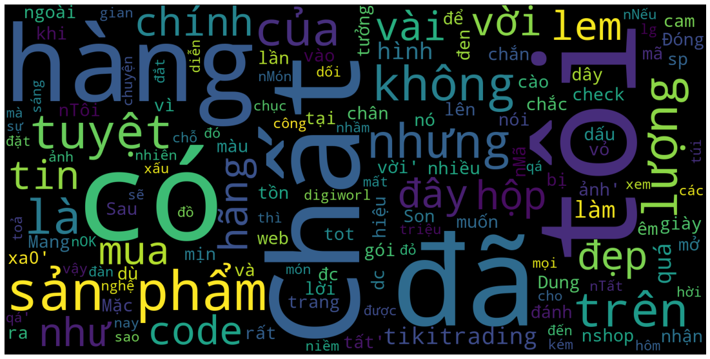
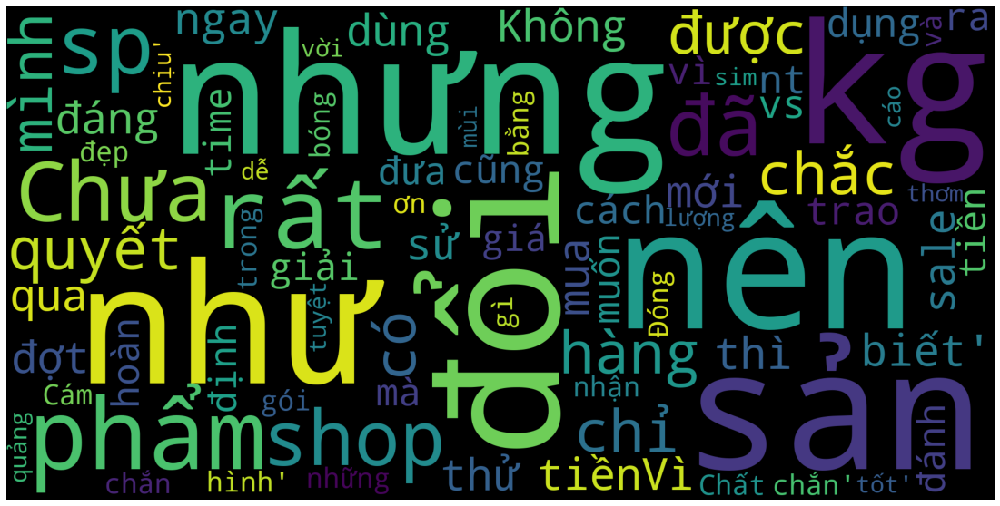

import pandas as pd
import numpy as np
from scipy.sparse import hstack, csr_matrix, vstack
from sklearn.feature_extraction.text import TfidfVectorizer, CountVectorizer
from sklearn.decomposition import TruncatedSVD
from sklearn.model_selection import StratifiedKFold
from sklearn.metrics import f1_score
from sklearn.ensemble import *
from sklearn.linear_model import *
from tqdm import *
import wordcloud
import matplotlib.pyplot as plt
import gc
import lightgbm as lgb
%matplotlib inlineCredit: Code and Notebooks from https://github.com/ngxbac/aivivn_phanloaisacthaibinhluan
https://www.aivivn.com/
# Load data
train_df = pd.read_csv("./data/train.csv")
test_df = pd.read_csv("./data/test.csv")train_df.head()| id | comment | label | |
|---|---|---|---|
| 0 | train_000000 | Dung dc sp tot cam on \nshop Đóng gói sản phẩm... | 0 |
| 1 | train_000001 | Chất lượng sản phẩm tuyệt vời . Son mịn nhưng... | 0 |
| 2 | train_000002 | Chất lượng sản phẩm tuyệt vời nhưng k có hộp ... | 0 |
| 3 | train_000003 | :(( Mình hơi thất vọng 1 chút vì mình đã kỳ vọ... | 1 |
| 4 | train_000004 | Lần trước mình mua áo gió màu hồng rất ok mà đ... | 1 |
test_df.head()| id | comment | |
|---|---|---|
| 0 | test_000000 | Chưa dùng thử nên chưa biết |
| 1 | test_000001 | Không đáng tiềnVì ngay đợt sale nên mới mua n... |
| 2 | test_000002 | Cám ơn shop. Đóng gói sản phẩm rất đẹp và chắc... |
| 3 | test_000003 | Vải đẹp.phom oki luôn.quá ưng |
| 4 | test_000004 | Chuẩn hàng đóng gói đẹp |
df = pd.concat([train_df, test_df], axis=0)
# del train_df, test_df
# gc.collect()import emoji
def extract_emojis(str):
return [c for c in str if c in emoji.UNICODE_EMOJI]good_df = train_df[train_df['label'] == 0]
good_comment = good_df['comment'].values
good_emoji = []
for c in good_comment:
good_emoji += extract_emojis(c)
good_emoji = np.unique(np.asarray(good_emoji))bad_df = train_df[train_df['label'] == 1]
bad_comment = bad_df['comment'].values
bad_emoji = []
for c in bad_comment:
bad_emoji += extract_emojis(c)
bad_emoji = np.unique(np.asarray(bad_emoji))good_emojiarray(['↖', '↗', '☀', '☺', '♀', '♥', '✌', '✨', '❌', '❣', '❤', '⭐', '🆗',
'🌝', '🌟', '🌧', '🌷', '🌸', '🌺', '🌼', '🍓', '🎈', '🎉', '🏻', '🏼', '🏿',
'🐅', '🐾', '👉', '👌', '👍', '👏', '💋', '💌', '💐', '💓', '💕', '💖', '💗',
'💙', '💚', '💛', '💜', '💞', '💟', '💥', '💪', '💮', '💯', '💰', '📑', '🖤',
'😀', '😁', '😂', '😃', '😄', '😅', '😆', '😇', '😉', '😊', '😋', '😌', '😍',
'😎', '😑', '😓', '😔', '😖', '😗', '😘', '😙', '😚', '😛', '😜', '😝', '😞',
'😟', '😡', '😢', '😣', '😥', '😩', '😪', '😫', '😬', '😭', '😯', '😰', '😱',
'😲', '😳', '😻', '😿', '🙁', '🙂', '🙃', '🙄', '🙆', '🙌', '🤑', '🤔', '🤗',
'🤙', '🤝', '🤣', '🤤', '🤨', '🤪', '🤭'], dtype='<U1')# Just remove "sad, bad" emoji :D
good_emoji_fix = [
'↖', '↗', '☀', '☺', '♀', '♥', '✌', '✨', '❣', '❤', '⭐', '🆗',
'🌝', '🌟', '🌧', '🌷', '🌸', '🌺', '🌼', '🍓', '🎈', '🎉', '🐅', '🐾', '👉',
'👌', '👍', '👏', '💋', '💌', '💐', '💓', '💕', '💖', '💗', '💙', '💚', '💛',
'💜', '💞', '💟', '💥', '💪', '💮', '💯', '💰', '📑', '🖤', '😀', '😁', '😂',
'😃', '😄', '😅', '😆', '😇', '😉', '😊', '😋', '😌', '😍', '😎', '😑', '😓', '😔',
'😖', '😗', '😘', '😙', '😚', '😛', '😜', '😝', '😞', '😟', '😡', '😯', '😰', '😱', '😲', '😳', '😻', '🙂', '🙃', '🙄', '🙆', '🙌', '🤑', '🤔', '🤗',
]bad_emojiarray(['☹', '✋', '❌', '❓', '❤', '⭐', '🎃', '🏻', '🏼', '🏿', '👌', '👍', '👎',
'👶', '💀', '💋', '😁', '😂', '😈', '😊', '😌', '😏', '😐', '😑', '😒', '😓',
'😔', '😖', '😚', '😞', '😟', '😠', '😡', '😢', '😣', '😤', '😥', '😧', '😩',
'😪', '😫', '😬', '😭', '😳', '😵', '😶', '🙁', '🙂', '🙄', '🤔', '🤚', '🤤'],
dtype='<U1')# Just remove "good" emoji :D
bad_emoji_fix = [
'☹', '✋', '❌', '❓', '👎', '👶', '💀',
'😐', '😑', '😒', '😓', '😔',
'😞', '😟', '😠', '😡', '😢', '😣', '😤', '😥', '😧', '😩', '😪', '😫', '😬',
'😭', '😳', '😵', '😶', '🙁', '🙄', '🤔',
]def count_good_bad_emoji(row):
comment = row['comment']
n_good_emoji = 0
n_bad_emoji = 0
for c in comment:
if c in good_emoji_fix:
n_good_emoji += 1
if c in bad_emoji_fix:
n_bad_emoji += 1
row['n_good_emoji'] = n_good_emoji
row['n_bad_emoji'] = n_bad_emoji
return row# Some features
df['comment'] = df['comment'].astype(str).fillna(' ')
df['comment'] = df['comment'].str.lower()
df['num_words'] = df['comment'].apply(lambda s: len(s.split()))
df['num_unique_words'] = df['comment'].apply(lambda s: len(set(w for w in s.split())))
df['words_vs_unique'] = df['num_unique_words'] / df['num_words'] * 100
df = df.apply(count_good_bad_emoji, axis=1)df['good_bad_emoji_ratio'] = df['n_good_emoji'] / df['n_bad_emoji']
df['good_bad_emoji_ratio'] = df['good_bad_emoji_ratio'].replace(np.nan, 0)
df['good_bad_emoji_ratio'] = df['good_bad_emoji_ratio'].replace(np.inf, 99)
df['good_bad_emoji_diff'] = df['n_good_emoji'] - df['n_bad_emoji']
df['good_bad_emoji_sum'] = df['n_good_emoji'] + df['n_bad_emoji']train_df = df[~df['label'].isnull()]
test_df = df[df['label'].isnull()]
train_comments = train_df['comment'].fillna("none").values
test_comments = test_df['comment'].fillna("none").values
y_train = train_df['label'].valuestrain_df.head()| id | comment | label | num_words | num_unique_words | words_vs_unique | n_good_emoji | n_bad_emoji | good_bad_emoji_ratio | good_bad_emoji_diff | good_bad_emoji_sum | |
|---|---|---|---|---|---|---|---|---|---|---|---|
| 0 | train_000000 | dung dc sp tot cam on \nshop đóng gói sản phẩm... | 0.0 | 22 | 20 | 90.909091 | 0 | 0 | 0.0 | 0 | 0 |
| 1 | train_000001 | chất lượng sản phẩm tuyệt vời . son mịn nhưng... | 0.0 | 18 | 18 | 100.000000 | 0 | 0 | 0.0 | 0 | 0 |
| 2 | train_000002 | chất lượng sản phẩm tuyệt vời nhưng k có hộp ... | 0.0 | 18 | 14 | 77.777778 | 0 | 0 | 0.0 | 0 | 0 |
| 3 | train_000003 | :(( mình hơi thất vọng 1 chút vì mình đã kỳ vọ... | 1.0 | 114 | 91 | 79.824561 | 0 | 0 | 0.0 | 0 | 0 |
| 4 | train_000004 | lần trước mình mua áo gió màu hồng rất ok mà đ... | 1.0 | 26 | 24 | 92.307692 | 0 | 0 | 0.0 | 0 | 0 |
Tạo feature TFIDF đơn giản
tfidf = TfidfVectorizer(
min_df = 5,
max_df = 0.8,
max_features=10000,
sublinear_tf=True
)X_train_tfidf = tfidf.fit_transform(train_comments)
X_test_tfidf = tfidf.transform(test_comments)EXCLUED_COLS = ['id', 'comment', 'label']
static_cols = [c for c in train_df.columns if not c in EXCLUED_COLS]
X_train_static = train_df[static_cols].values
X_test_static = test_df[static_cols].valuesX_train = hstack([X_train_tfidf, csr_matrix(X_train_static)]).tocsr()
X_test = hstack([X_test_tfidf, csr_matrix(X_test_static)]).tocsr()
# X_train = X_train_tfidf
# X_test = X_test_tfidfX_train.shape, X_test.shape, y_train.shape((16087, 2687), (10981, 2687), (16087,))Stacking method
models=[
######## First level ########
[
RandomForestClassifier (n_estimators=100, criterion="entropy", max_depth=5, max_features=0.5, random_state=1),
ExtraTreesClassifier (n_estimators=100, criterion="entropy", max_depth=5, max_features=0.5, random_state=1),
GradientBoostingClassifier(n_estimators=100, learning_rate=0.1, max_depth=5, max_features=0.5, random_state=1),
LogisticRegression(random_state=1)
],
######## Second level ########
[
RandomForestClassifier (n_estimators=200, criterion="entropy", max_depth=5, max_features=0.5, random_state=1)
]
]from pystacknet.pystacknet import StackNetClassifier
model = StackNetClassifier(
models, metric="f1",
folds=5,
restacking=False,
use_retraining=True,
use_proba=True,
random_state=12345, n_jobs=1, verbose=1
)
model.fit(X_train, y_train)
preds=model.predict_proba(X_test)====================== Start of Level 0 ======================
Input Dimensionality 2687 at Level 0
4 models included in Level 0
Level 0, fold 1/5 , model 0 , f1===0.789457
Level 0, fold 1/5 , model 1 , f1===0.813472
Level 0, fold 1/5 , model 2 , f1===0.857641
Level 0, fold 1/5 , model 3 , f1===0.865303
=========== end of fold 1 in level 0 ===========
Level 0, fold 2/5 , model 0 , f1===0.812040
Level 0, fold 2/5 , model 1 , f1===0.824688
Level 0, fold 2/5 , model 2 , f1===0.865074
Level 0, fold 2/5 , model 3 , f1===0.872805
=========== end of fold 2 in level 0 ===========
Level 0, fold 3/5 , model 0 , f1===0.804277
Level 0, fold 3/5 , model 1 , f1===0.821736
Level 0, fold 3/5 , model 2 , f1===0.876429
Level 0, fold 3/5 , model 3 , f1===0.876494
=========== end of fold 3 in level 0 ===========
Level 0, fold 4/5 , model 0 , f1===0.800000
Level 0, fold 4/5 , model 1 , f1===0.825202
Level 0, fold 4/5 , model 2 , f1===0.873005
Level 0, fold 4/5 , model 3 , f1===0.863442
=========== end of fold 4 in level 0 ===========
Level 0, fold 5/5 , model 0 , f1===0.802153
Level 0, fold 5/5 , model 1 , f1===0.813953
Level 0, fold 5/5 , model 2 , f1===0.861043
Level 0, fold 5/5 , model 3 , f1===0.873807
=========== end of fold 5 in level 0 ===========
Level 0, model 0 , f1===0.801585
Level 0, model 1 , f1===0.819810
Level 0, model 2 , f1===0.866638
Level 0, model 3 , f1===0.870370
Output dimensionality of level 0 is 4
====================== End of Level 0 ======================
level 0 lasted 102.148064 seconds
====================== Start of Level 1 ======================
Input Dimensionality 4 at Level 1
1 models included in Level 1
Level 1, fold 1/5 , model 0 , f1===0.872932
=========== end of fold 1 in level 1 ===========
Level 1, fold 2/5 , model 0 , f1===0.874336
=========== end of fold 2 in level 1 ===========
Level 1, fold 3/5 , model 0 , f1===0.883098
=========== end of fold 3 in level 1 ===========
Level 1, fold 4/5 , model 0 , f1===0.875176
=========== end of fold 4 in level 1 ===========
Level 1, fold 5/5 , model 0 , f1===0.878459
=========== end of fold 5 in level 1 ===========
Level 1, model 0 , f1===0.876800
Output dimensionality of level 1 is 1
====================== End of Level 1 ======================
level 1 lasted 18.519124 seconds
====================== End of fit ======================
fit() lasted 120.668525 seconds
====================== Start of Level 0 ======================
1 estimators included in Level 0
====================== Start of Level 1 ======================
1 estimators included in Level 1 /home/gao/anaconda3/lib/python3.7/site-packages/sklearn/linear_model/_logistic.py:764: ConvergenceWarning: lbfgs failed to converge (status=1):
STOP: TOTAL NO. of ITERATIONS REACHED LIMIT.
Increase the number of iterations (max_iter) or scale the data as shown in:
https://scikit-learn.org/stable/modules/preprocessing.html
Please also refer to the documentation for alternative solver options:
https://scikit-learn.org/stable/modules/linear_model.html#logistic-regression
/home/gao/anaconda3/lib/python3.7/site-packages/sklearn/linear_model/_logistic.py:764: ConvergenceWarning: lbfgs failed to converge (status=1):
STOP: TOTAL NO. of ITERATIONS REACHED LIMIT.
Increase the number of iterations (max_iter) or scale the data as shown in:
https://scikit-learn.org/stable/modules/preprocessing.html
Please also refer to the documentation for alternative solver options:
https://scikit-learn.org/stable/modules/linear_model.html#logistic-regression
/home/gao/anaconda3/lib/python3.7/site-packages/sklearn/linear_model/_logistic.py:764: ConvergenceWarning: lbfgs failed to converge (status=1):
STOP: TOTAL NO. of ITERATIONS REACHED LIMIT.
Increase the number of iterations (max_iter) or scale the data as shown in:
https://scikit-learn.org/stable/modules/preprocessing.html
Please also refer to the documentation for alternative solver options:
https://scikit-learn.org/stable/modules/linear_model.html#logistic-regression
/home/gao/anaconda3/lib/python3.7/site-packages/sklearn/linear_model/_logistic.py:764: ConvergenceWarning: lbfgs failed to converge (status=1):
STOP: TOTAL NO. of ITERATIONS REACHED LIMIT.
Increase the number of iterations (max_iter) or scale the data as shown in:
https://scikit-learn.org/stable/modules/preprocessing.html
Please also refer to the documentation for alternative solver options:
https://scikit-learn.org/stable/modules/linear_model.html#logistic-regression
/home/gao/anaconda3/lib/python3.7/site-packages/sklearn/linear_model/_logistic.py:764: ConvergenceWarning: lbfgs failed to converge (status=1):
STOP: TOTAL NO. of ITERATIONS REACHED LIMIT.
Increase the number of iterations (max_iter) or scale the data as shown in:
https://scikit-learn.org/stable/modules/preprocessing.html
Please also refer to the documentation for alternative solver options:
https://scikit-learn.org/stable/modules/linear_model.html#logistic-regression
/home/gao/anaconda3/lib/python3.7/site-packages/sklearn/linear_model/_logistic.py:764: ConvergenceWarning: lbfgs failed to converge (status=1):
STOP: TOTAL NO. of ITERATIONS REACHED LIMIT.
Increase the number of iterations (max_iter) or scale the data as shown in:
https://scikit-learn.org/stable/modules/preprocessing.html
Please also refer to the documentation for alternative solver options:
https://scikit-learn.org/stable/modules/linear_model.html#logistic-regressionpred_cls = np.argmax(preds, axis=1)# submission = pd.read_csv("./data/sample_submission.csv")
# submission['label'] = pred_cls# submission.head()# submission.to_csv("stack_demo.csv", index=False)Ensemble method
from sklearn.model_selection import cross_val_predict
models = [
RandomForestClassifier (n_estimators=100, criterion="entropy", max_depth=5, max_features=0.5, random_state=1),
ExtraTreesClassifier (n_estimators=100, criterion="entropy", max_depth=5, max_features=0.5, random_state=1),
GradientBoostingClassifier(n_estimators=100, learning_rate=0.1, max_depth=5, max_features=0.5, random_state=1),
LogisticRegression(random_state=1)
]def cross_val_and_predict(clf, X, y, X_test, nfolds):
kf = StratifiedKFold(n_splits=nfolds, shuffle=True, random_state=42)
oof_preds = np.zeros((X.shape[0], 2))
sub_preds = np.zeros((X_test.shape[0], 2))
for fold, (train_idx, valid_idx) in enumerate(kf.split(X, y)):
X_train, y_train = X[train_idx], y[train_idx]
X_valid, y_valid = X[valid_idx], y[valid_idx]
clf.fit(X_train, y_train)
oof_preds[valid_idx] = clf.predict_proba(X_valid)
sub_preds += clf.predict_proba(X_test) / kf.n_splits
return oof_preds, sub_predssub_preds = []
for clf in models:
oof_pred, sub_pred = cross_val_and_predict(clf, X_train, y_train, X_test, nfolds=5)
oof_pred_cls = oof_pred.argmax(axis=1)
oof_f1 = f1_score(y_pred=oof_pred_cls, y_true=y_train)
print(clf.__class__)
print(f"F1 CV: {oof_f1}")
sub_preds.append(sub_pred)<class 'sklearn.ensemble._forest.RandomForestClassifier'>
F1 CV: 0.8036813709933355
<class 'sklearn.ensemble._forest.ExtraTreesClassifier'>
F1 CV: 0.8206730456291089
<class 'sklearn.ensemble._gb.GradientBoostingClassifier'>
F1 CV: 0.864902800196505
<class 'sklearn.linear_model._logistic.LogisticRegression'>
F1 CV: 0.8695652173913043/home/gao/anaconda3/lib/python3.7/site-packages/sklearn/linear_model/_logistic.py:764: ConvergenceWarning: lbfgs failed to converge (status=1):
STOP: TOTAL NO. of ITERATIONS REACHED LIMIT.
Increase the number of iterations (max_iter) or scale the data as shown in:
https://scikit-learn.org/stable/modules/preprocessing.html
Please also refer to the documentation for alternative solver options:
https://scikit-learn.org/stable/modules/linear_model.html#logistic-regression
/home/gao/anaconda3/lib/python3.7/site-packages/sklearn/linear_model/_logistic.py:764: ConvergenceWarning: lbfgs failed to converge (status=1):
STOP: TOTAL NO. of ITERATIONS REACHED LIMIT.
Increase the number of iterations (max_iter) or scale the data as shown in:
https://scikit-learn.org/stable/modules/preprocessing.html
Please also refer to the documentation for alternative solver options:
https://scikit-learn.org/stable/modules/linear_model.html#logistic-regression
/home/gao/anaconda3/lib/python3.7/site-packages/sklearn/linear_model/_logistic.py:764: ConvergenceWarning: lbfgs failed to converge (status=1):
STOP: TOTAL NO. of ITERATIONS REACHED LIMIT.
Increase the number of iterations (max_iter) or scale the data as shown in:
https://scikit-learn.org/stable/modules/preprocessing.html
Please also refer to the documentation for alternative solver options:
https://scikit-learn.org/stable/modules/linear_model.html#logistic-regression
/home/gao/anaconda3/lib/python3.7/site-packages/sklearn/linear_model/_logistic.py:764: ConvergenceWarning: lbfgs failed to converge (status=1):
STOP: TOTAL NO. of ITERATIONS REACHED LIMIT.
Increase the number of iterations (max_iter) or scale the data as shown in:
https://scikit-learn.org/stable/modules/preprocessing.html
Please also refer to the documentation for alternative solver options:
https://scikit-learn.org/stable/modules/linear_model.html#logistic-regression
/home/gao/anaconda3/lib/python3.7/site-packages/sklearn/linear_model/_logistic.py:764: ConvergenceWarning: lbfgs failed to converge (status=1):
STOP: TOTAL NO. of ITERATIONS REACHED LIMIT.
Increase the number of iterations (max_iter) or scale the data as shown in:
https://scikit-learn.org/stable/modules/preprocessing.html
Please also refer to the documentation for alternative solver options:
https://scikit-learn.org/stable/modules/linear_model.html#logistic-regressionsub_preds = np.asarray(sub_preds)
sub_preds = sub_preds.mean(axis=0)
sub_pred_cls = sub_preds.argmax(axis=1)# submission_ensemble = submission.copy()
# submission_ensemble['label'] = sub_pred_cls
# submission_ensemble.to_csv("ensemble.csv", index=False)import pandas as pd
import numpy as np
from sklearn.feature_extraction.text import TfidfVectorizer
from sklearn.decomposition import TruncatedSVD
from sklearn.model_selection import StratifiedKFold
from sklearn.metrics import f1_score
import wordcloud
import matplotlib.pyplot as plt
import gc
import lightgbm as lgb
%matplotlib inline
# Load data
train_df = pd.read_csv("./data/train.csv")
test_df = pd.read_csv("./data/test.csv")
train_df.head()
test_df.head()
train_comments = train_df['comment'].fillna("none").values
test_comments = test_df['comment'].fillna("none").values
y_train = train_df['label'].values# Wordcloud of training set
cloud = np.array(train_comments).flatten()
plt.figure(figsize=(20,10))
word_cloud = wordcloud.WordCloud(
max_words=200,background_color ="black",
width=2000,height=1000,mode="RGB"
).generate(str(cloud))
plt.axis("off")
plt.imshow(word_cloud)<matplotlib.image.AxesImage at 0x7f16aaad1f98>
# Wordcloud of test set
cloud = np.array(test_comments).flatten()
plt.figure(figsize=(20,10))
word_cloud = wordcloud.WordCloud(
max_words=100,background_color ="black",
width=2000,height=1000,mode="RGB"
).generate(str(cloud))
plt.axis("off")
plt.imshow(word_cloud)
<matplotlib.image.AxesImage at 0x7f16aabc2e48>
tfidf = TfidfVectorizer(
min_df=5,
max_df= 0.8,
max_features=10000,
sublinear_tf=True
)
X_train = tfidf.fit_transform(train_comments)
X_test = tfidf.transform(test_comments)
X_train.shape, X_test.shape, y_train.shape
def lgb_f1_score(y_hat, data):
y_true = data.get_label()
y_hat = np.round(y_hat) # scikits f1 doesn't like probabilities
return 'f1', f1_score(y_true, y_hat), True
print("Starting LightGBM. Train shape: {}, test shape: {}".format(X_train.shape, X_test.shape))
# Cross validation model
folds = StratifiedKFold(n_splits=5, shuffle=True, random_state=69)
# Create arrays and dataframes to store results
oof_preds = np.zeros(X_train.shape[0])
sub_preds = np.zeros(X_test.shape[0])
# k-fold
for n_fold, (train_idx, valid_idx) in enumerate(folds.split(X_train, y_train)):
print("Fold %s" % (n_fold))
train_x, train_y = X_train[train_idx], y_train[train_idx]
valid_x, valid_y = X_train[valid_idx], y_train[valid_idx]
# set data structure
lgb_train = lgb.Dataset(train_x,
label=train_y,
free_raw_data=False)
lgb_test = lgb.Dataset(valid_x,
label=valid_y,
free_raw_data=False)
params = {
'objective' :'binary',
'learning_rate' : 0.01,
'num_leaves' : 76,
'feature_fraction': 0.64,
'bagging_fraction': 0.8,
'bagging_freq':1,
'boosting_type' : 'gbdt',
}
reg = lgb.train(
params,
lgb_train,
valid_sets=[lgb_train, lgb_test],
valid_names=['train', 'valid'],
num_boost_round=10000,
verbose_eval=100,
early_stopping_rounds=100,
feval=lgb_f1_score
)
oof_preds[valid_idx] = reg.predict(valid_x, num_iteration=reg.best_iteration)
sub_preds += reg.predict(X_test, num_iteration=reg.best_iteration) / folds.n_splits
del reg, train_x, train_y, valid_x, valid_y
gc.collect()
threshold = 0.5
preds = (sub_preds > threshold).astype(np.uint8)Starting LightGBM. Train shape: (16087, 2679), test shape: (10981, 2679)
Fold 0
[LightGBM] [Info] Number of positive: 5445, number of negative: 7424
[LightGBM] [Warning] Auto-choosing col-wise multi-threading, the overhead of testing was 0.051310 seconds.
You can set `force_col_wise=true` to remove the overhead.
[LightGBM] [Info] Total Bins 52352
[LightGBM] [Info] Number of data points in the train set: 12869, number of used features: 1137
[LightGBM] [Info] [binary:BoostFromScore]: pavg=0.423110 -> initscore=-0.310020
[LightGBM] [Info] Start training from score -0.310020
Training until validation scores don't improve for 100 rounds
[100] train's binary_logloss: 0.393295 train's f1: 0.874977 valid's binary_logloss: 0.410023 valid's f1: 0.851221
[200] train's binary_logloss: 0.290724 train's f1: 0.893252 valid's binary_logloss: 0.323003 valid's f1: 0.865039
[300] train's binary_logloss: 0.238792 train's f1: 0.90528 valid's binary_logloss: 0.287577 valid's f1: 0.872143
[400] train's binary_logloss: 0.205608 train's f1: 0.919228 valid's binary_logloss: 0.27182 valid's f1: 0.872272
[500] train's binary_logloss: 0.18123 train's f1: 0.928584 valid's binary_logloss: 0.265462 valid's f1: 0.874282
[600] train's binary_logloss: 0.162145 train's f1: 0.937332 valid's binary_logloss: 0.263343 valid's f1: 0.87482
Early stopping, best iteration is:
[522] train's binary_logloss: 0.176706 train's f1: 0.930145 valid's binary_logloss: 0.264713 valid's f1: 0.875718
Fold 1
[LightGBM] [Info] Number of positive: 5445, number of negative: 7424
[LightGBM] [Warning] Auto-choosing col-wise multi-threading, the overhead of testing was 0.037747 seconds.
You can set `force_col_wise=true` to remove the overhead.
[LightGBM] [Info] Total Bins 52365
[LightGBM] [Info] Number of data points in the train set: 12869, number of used features: 1135
[LightGBM] [Info] [binary:BoostFromScore]: pavg=0.423110 -> initscore=-0.310020
[LightGBM] [Info] Start training from score -0.310020
Training until validation scores don't improve for 100 rounds
[100] train's binary_logloss: 0.392321 train's f1: 0.875253 valid's binary_logloss: 0.410153 valid's f1: 0.849244
[200] train's binary_logloss: 0.290396 train's f1: 0.892278 valid's binary_logloss: 0.323353 valid's f1: 0.861736